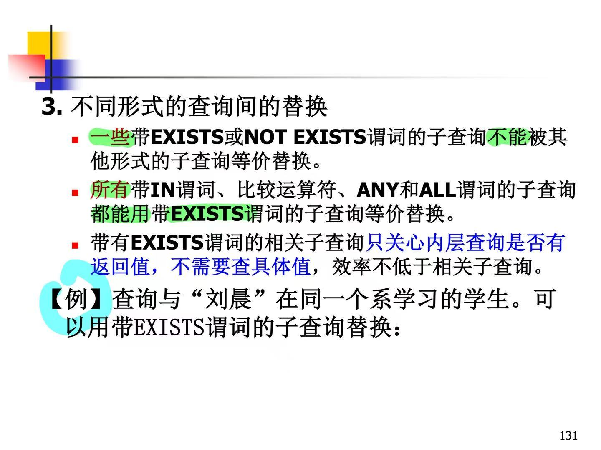

二、关系数据库
1.关系模型的基本概念、关系运算
1.1 关系模型的组成
·关系的型成为关系模式，关系模式是对关系的描述，包括关系名、属性名、属性的类型和长度、以及属性间固有的数据关联关系。
·关系模式一般简记为关系名和属性名的集合R(A1,A2,...,An)，例如：图书(书号，书名，作者，单价，出版社)
·关系的值是元组的集合，称为关系，关系模式R上的一个关系通常写为r(R)
| 关系与关系模式 | 关系模式的形式化表示 | 关系数据库模式 |
|---|---|---|
1.2 关系的基本概念
笛卡尔积：
| 笛卡尔积 | 元组、分量、域 | 基数 |
|---|---|---|
键：能够惟一标识元组的属性或属性组
候选键：关系中能够起到标识作用的键，可能有多个
主键：若有多个候选键，则选定其中一个作为主键
联合键：由关系的多个属性组成的键
全键：由关系的所有属性组成的键
主属性：候选键中的属性
非主属性：不包含在任何候选键中的属性
外键：当前关系的某个属性是另一个关系的键。外键不一定要与相应的主键同名
关系：笛卡尔积的子集，有限元组的集合，规范化了的二维表行的集合
1.3 关系的基本性质
·列是同质的
·不同的列可出自同一个域
·列的次序是无关紧要的
·元组的每个分量都是原子的
·元组的次序是无关紧要的
·各个元组都是不同的
1.4 实体完整性和参照完整性
·称为 称为关系的两个不变性 ，由关系系统自动支持
空值：“不知道”、“不存在”或“无意义”的值。
实体完整性约束：对主键的约束，作为键的各个属性的值不能为空，主键的值不能为空或部分为空
参照完整性约束：对外键的约束，外键的值必须是另一个关系的主键值或空值
参照：某个关系与另一个关系通过定义在同一个域上的属性而建立的联系。参照关系：例如R1包含外键；被参照关系：例如R2主键
1.5 关系代数基本运算
·传统的集合运算：并、差、交、广义笛卡尔积
·专门的关系运算：选择、投影、连接、除
并：属于R或属于S的元组的集合
差：属于R但不属于S的元组的集合
交：既属于R又属于S的元组的集合
笛卡尔积：R中所有元组与S中所有元组的拼接
选择、投影、连接：
| 选择 | 投影 | 连接 |
|---|---|---|
| 选择满足一定条件的元组子集，是从行的角度进行的运算 | 选择出若干列，即R中元组在属性集X上的值，是从列的角度进行运算 | 将两个关系中满足条件的元组拼接起来形成新元组的集合 |
等值连接、自然连接
| 等值连接 | 自然连接 |
|---|---|
| 连接条件是两个属性值的相等比较 | 结果中把重复的属性列去掉 |
除法运算
| 象集 | 除法 | 通俗理解 |
|---|---|---|
| 除法运算是从列的角度进行的，是从R中选出属性集X，并在S中选出属性集Y，满足条件的元组的集合 | ||
| 表示R中属性组X上值为x的诸元组在Z分量上的取值的集合 | 元组在A分量上的值a的象集包含S在(B, C)上投影的集合 | R的属性中去掉与S相同的属性后剩下的其他属性 ，同时从行和列的角度进行计算 |
左外连接、右外连接、完全外连接
| 左外连接 | 右外连接 | 完全外连接 |
|---|---|---|
1.6 用关系代数表达查询
·典型检索实例
| 自然连接当“选择” | 除法处理“包含” |
|---|---|
 |
|
| 以投影出来的Sno值为条件在S表中选出相应学生数据 | 要选出包含所有课程的，所以除以所有Cno的值集合 |
·插入删除实例
| 插入和删除 |
|---|
1.7 元素关系演算和域关系演算
·不考
2.关系数据库标准语言SQL语言
·SQL的四大功能：数据定义、数据操纵、数据控制、嵌入式SQL
2.1 SQL语言的特点
·综合统一：集数据定义语言DDL、数据操纵语言DML、数据控制语言DCL于一体
·高度非过程化：只需要指定操作对象和操作内容，不必关心执行过程
·面向集合的操作方式
·以同一种语法结构提供两种使用方式（交互式、嵌入式）
·语言简洁，易学易用
| SQL功能 | 动词 |
|---|---|
| 数据查询 | SELECT |
| 数据定义 | CREATE、ALTER、DROP |
| 数据操纵 | SELECT、INSERT、UPDATE、DELETE |
| 数据控制 | GRANT、REVOKE |
2.2 SQL中的基本概念：基本表和视图
基本表：一个关系模式对应一个基本表
视图：从一个或多个基本表中导出的表，仅有逻辑上的定义，不实际存储数据，是一种虚表
2.3 SQL的DDL语句、定义基本表和视图
SQL的数据定义语句
| 创建 | 删除 | 修改 | |
|---|---|---|---|
| 模式 | CREATE SCHEMA | DROP SCHEMA | |
| 表 | CREATE TABLE | DROP TABLE | ALTER TABLE |
| 视图 | CREATE VIEW | DROP VIEW | |
| 索引 | CREATE INDEX | DROP INDEX |
·一个数据库中可以建立多个模式，一个模式下通常包含多个表、视图、索引等数据库对象
//定义学生数据库模式SST，用户名为SDBA
CREATE SCHEMA SST AUTHORIZATION SDBA;
//创建模式时定义模式元素
CREATE SCHEMA AUTHORIZATION ross
CREATE TABLE t1(c1 INT PRIMARY KEY, c2 INT REFERENCES t2(c1))
CREATE TABLE t2(c1 INT PRIMARY KEY, c2 INT REFERENCES t1(c1))
//删除模式
DROP SCHEMA SST RESTRICT;//限制式，如果模式中存在对象，则不能删除
DROP SCHEMA SST CASCADE;//级联式，删除模式及其所有对象
//建立学生表Student、课程表Course、选课表SC
CREATE TABLE Student(
Sno CHAR(10) NOT NULL UNIQUE,
Sname CHAR(8),
Sage INT,
Ssex CHAR(2),
Sdept CHAR(12),
//CONSTRANTS定义列级或表级约束
CONSTRANTS C1 CHECK (Ssex IN ('M', 'F')),
CONSTRANTS S_PK PRIMARY KEY (Sno)
);
CREATE TABLE Course(
Cno CHAR(10) NOT NULL,
Cname CHAR(8),
Ccredit INT,
CONSTRANTS C_PK PRIMARY KEY (Cno)
);
CREATE TABLE SC(
Sno CHAR(10) NOT NULL,
Cno CHAR(10) NOT NULL,
Grade INT CHECK (Grade BETWEEN 0 AND 100),
CONSTRANTS SC_PK PRIMARY KEY (Sno, Cno),
CONSTRANTS SC_FK1 FOREIGN KEY (Sno) REFERENCES Student(Sno),
CONSTRANTS SC_FK2 FOREIGN KEY (Cno) REFERENCES Course(Cno)
);
//PRIMARY KEY 和 FOREIGN KEY 前面的CONSTRANTS是可选的
//显式指定表的模式
CREATE TABLE SST.Student(……);
//修改基本表
//在学生列表中加一列班级
ALTER TABLE Student ADD Cclass CHAR(10);
//修改学生表中姓名列长度为20
ALTER TABLE Student ALTER Sname CHAR(20);
ALTER TABLE Student MODIFY Sname CHAR(20);
//删除学生表中姓名列
ALTER TABLE Student DROP Sname RESTRICT;//同样可加RESTRICT或CASCADE
2.4 唯一索引和聚集索引、定义索引
·索引：是一种数据结构，提供不同的存取路径，可以加快查询速度，更新和维护由DBMS自动完成，系统在存储数据时会自动选择是否使用索引；可以建立在一列或多列上（用逗号分隔），升序ASC，降序DESC，缺省值ASC；代价有占更多空间、对数据修改花更长时间；属于内模式范畴
·聚集索引：索引次序与基本表中元组的物理次序一致，一个基本表上最多只能建立一个聚集索引，可以包含多个列，适用于很少对基表进行增删操作、很少对其中的变长列进行修改操作
//在学生表的学号列上按升序建立惟一索引
CREAATE UNIQUE INDEX S_SNO ON Student(Sno);
//在学生表上按班级降序、年龄升序建立索引
CREATE INDEX S_CLASS_AGE ON Student(Cclass DESC, Sage ASC);
//聚集索引
CREATE CLUSTERED INDEX Stusname ON Student(Sname);
//Student表中的记录将按照Sname的升序存放
//删除索引
DROP INDEX S_SNO;
2.5 SQL查询
| 一般格式 | 基本结构 |
|---|---|
单表查询
//查询计算机系学生的学号和姓名
SELECT Sno, Sname FROM Student WHERE Sdept = '计算机系';
//查询年龄在29到25岁之间的学生信息
SELECT * FROM Student WHERE Sage BETWEEN 29 AND 25;
//查询已经选修了课程的学生学号，并按学号升序排序，DIISTINCT消除重复行，作用范围是所有目标列（写一遍就够了
SELECT DISTINCT Sno FROM SC ORDER BY Sno;
//查询每门课的选修人数
SELECT Cno, COUNT(*) FROM SC GROUP BY Cno;
//查询均分在85分以上的学生学号和平均成绩
SELECT Sno, AVG(Grade) FROM SC GROUP BY Sno HAVING AVG(Grade) >= 85;
//查询成绩在75~85分之间的学生学号和成绩
SELECT Sno, Grade FROM SC WHERE Grade >= 75 AND Grade <= 85;
//查询年龄为19岁的所有姓李的学生姓名
SELECT Sname FROM Student WHERE Sname LIKE '李%' AND Sage = 19;
//查询缺考学生的学号和课程号
SELECT Sno, Cno FROM SC WHERE Grade IS NULL;
//查询经过计算的值
//查询全体学生的姓名、出生年份和所在系，要求用小写字母表示所在系名
SELECT Sname, 'Year of Birth:', 2025-Sage, Lower(Sdept) FROM Student;
//使用别名改变查询结果的列标题：
SELECT Sname AS Name,
'Year of Birth:' Birth,
2025-Sage BIRTHYEAR,
Lower(Sdept) DEPARTMENT
FROM Student;
where语句常用查询条件
·IS NULL不能用=NULL替代，SQL允许特殊值NULL称作控制，不同于空白或零值，表示未知、不适用、保留（无权知道）的值，和任何值进行算术运算结果仍为空值
·多重条件查询，AND的优先级高于OR，可以用括号改变优先级，可以用来实现IN或BETWEEN AND
聚集函数
| 聚集函数 | 实例 |
|---|---|
 |
对查询结果分组
| 分组 | 实例 |
|---|---|
 |
WHERE和HAVING的区别
| 区别 | 实例 |
|---|---|
连接查询
·连接条件中各字段必须是可比的
普通连接
//等值连接
//查询每个学生及其选修课程的情况
SELECT Student.*, SC.* FROM Student, SC WHERE Student.Sno = SC.Sno;
//引用唯一属性名时可以省略表名
//自然连接
SELECT * FROM Student NATURAL JOIN SC;
//或者把属性不重复地都列出来
//非等值连接
//等号改为比较运算符，如<、>、>=、<=
//自身连接
//查询每一门课的间接先修课（即先修课的先修课）
SELECT FIRST.Cno, SECOND.CPNO FROM COURSE AS FIRST, COURSE AS SECOND
WHERE FIRST.CPno = SECOND.Cno
内连接
·使用比较运算符=, >, <等
·根据每个表共有的列的值匹配两个表中的行
外连接
·普通连接操作只输出满足链接条件的元组，外连接操作以指定表为链接主题，将主体表中不满足连接条件的元组一并输出
·LEFT, RIGHT, FULL OUTER JOIN
//查询每个学生的选课情况，包括没有选课的
SELECT Student.Sno,Sname,Ssex,Sage,Sdept,Cno,Grade
FROM Student LEFT OUTER JOIN SC ON (Student.Sno = SC.Sno)
复合条件连接
·WHERE子句中可以包含多个条件，用AND或OR连接
多表连接
·涉及两个以上的表的连接
嵌套查询
·一个SELECT-FROM-WHERE语句称为一个查询块，将一个查询嵌套在另一个查询块的WHERE子句或HAVING短句
·求解方法：不相关子查询（子查询查询条件不依赖父查询）从里向外逐层处理，相关子查询先取外层查询中表的第一个元组，处理内层，若为真放入结果表，然后再取外层表的下一个元组，重复直到外层表全部检查完
·子查询的限制：不能使用ORDER BY子句
带有IN谓词的子查询
| 第一步 | 第二步 |
|---|---|
·父查询和子查询中的表均可以使用别名（例如在Student后面加S1，在Sdept前加S1.）
带有比较运算符的子查询
·内层返回单值时，可用比较运算符（例如一个学生只可能在一个系学习，并且必须属于一个系，则上面例子可以用=替代IN）
·子查询一定要跟在比较符之后
带有ANY和ALL谓词的子查询
| 用ANY谓词 | 用聚集函数 |
|---|---|
带有EXISTS和NOT EXISTS谓词的子查询
·不返回任何数据，只产生true或false
|  |
·用EXIST实现全称量词：所有课都选修了=不存在某门课他是没选的
用EXIST实现逻辑蕴含
| 原理 | 思路 | 代码 |
|---|---|---|
2.6 SQL数据更新：插入、删除、修改
插入
·两种方式：插入单个元组、插入子查询结果
//在学生表中插入一个学生元组
INSERT INTO Student(Sno, Sname, Sage, Ssex, Sdept) VALUES ('20190101', '张三', 20, 'M', '计算机系');
//没有指定属性列：表示擦混入的是一条完整的元组，且属性列顺序一致
INSERT INTO Student VALUES('20190101', '张三', 20, 'M', '计算机系')
//将子查询结果插入指定表中
//计算计算机系每个学生的平均成绩并保存在CS-AVG表中
INSERT INTO CS-AVG(Sno, Grade)
SELECT Sno, AVG(Grade) FROM SC
WHERE Sno IN(
SELECT Sno FROM Student WHERE Sdept = '计算机系'
)
GROUP BY Sno;
·DBMS在执行插入语句时，会检查修改操作是否破坏表上已定义的完整性规则
修改
·UPDATE表示修改操作，SET指定修改方式，WHERE指定要修改的元组
·DBMS在执行修改语句时，会检查所插入元组是否破坏表上已定义的完整性规则（实体完整性、主键不允许修改、用户定义的完整性）
//将所有选修了数据库课的学生的成绩清空
UPDATE SC SET Grade=NULL WHERE Cno IN(SELECT Cno FROM Course WHERE Cname = '数据库')
删除
·删除指定表中满足WHERE子句条件的元组
·DBMS会检查完整性规则
//删除所有选修了数据库课的学生的选课信息
DELETE FROM SC WHERE Cno IN(SELECT Cno FROM Course WHERE Cname = '数据库')
2.7 视图消解、视图查询
视图：对应于外模式，是从一个或几个基本表（或视图）导出的虚表，定义是递归的，DBMS只存放视图的定义不存放视图的数据，基表中数据发生变化从视图查询出的数据也改变，实际上提供了一种观察数据的逻辑窗口，对视图的操作意味着对基表进行相应的操作
//建立基于多个基表的视图
//建立计算机系选修了C2课的学生姓名和成绩的视图，并要求数据更新时进行检查
CREATE VIEW CS_SC(Sno, sname, Grade)
AS SELECT Student.Sno, Sname, Grade FROM Student, SC
WHERE Student.Sno = SC.Sno AND SC.Cno = 'C2' AND Sdept = '计算机系';
WITH CHECK OPTION;
//DBMS创建视图时并不执行SELECT语句，只有对视图进行操作时才按照定义生成数据
//以SELECT* 方式创建的视图可扩充性差，应尽可能避免
//视图的列名与SELECT后的列名相对应，可以全省略/全写，有聚集函数或表达式、相同列名、取新名字时必须写
//删除视图
DROP VIEW CS_SC;
视图查询：DBMS有两种方法：实体化视图和视图消解法
实体化视图：1.有效性检查；2.执行视图定义，将试图临时实体化，生成临时表；3.转化为查询临时表；4.查询完毕删除临时表
视图消解法：1.进行有效性检查，查询的表、视图存在则取出视图定义；2.把视图定义中的子查询与用户的查询结合起来，转换成等价的对基本表的查询；3.执行修正后的查询
| 实例1 | 实例2 |
|---|---|
视图更新：转化为对基本表的操作。有些视图不可更新，因为不能唯一地有意义地转化为对相应基本表的更新
行列子集视图：仅在一个表上取其行列值且其中包含了候选键，这样形成的视图都是可更新的，除此之外的视图更新都会受限制
| 可更新实例 | 不可更新实例1 | 不可更新实例2 |
|---|---|---|
视图的优点：1.在且只能在一定程度上提供了数据的逻辑独立性，可通过对视图重新定义使用户的外模式保持不变；2.简化了用户的数据结构，简化用户的操作，更清晰地表达查询；3.使用户以不同角度看待相同的数；4.提供了安全保护功能
2.8 SQL不同对象的权限
·SQL权限由DBA和表的建立者定义
·不同的数据库对象有不同的操作权限
| 数据库 | CREATE TABLE |
| 表 | SELECT、INSERT、UPDATE、DELET; ALTER、INDEX |
| 属性列 | SELECT、INSERT、UPDATE、DELETE |
| 视图 | SELECT、INSERT、UPDATE、DELETE |
授权和权限回收
//把对表SC的查询权限授予所有用户
GRANT SELECT ON TABLE SC TO PUBLIC;
//把对Student表和Course表的全部权限授予用户U1和U2
GRANT ALL PRIVILEGES ON TABLE Student, Course TO U1, U2;
//把用户U4修改学生学号的权限回收
REVOKE UPDATE(Sno) ON TABLE Student FROM U4;
2.9 嵌入式SQL的一些基本概念
嵌入式SQL：SQL是非过程性语言，事务处理一般是过程性，需要应用高级语言。SQL负责数据库的操纵，宿主语言负责控制程序流程和数据的输入输出。
嵌入式SQL的编译
预编译：所有SQL语句必须加前缀EXEC SQL，有的还要求末尾加END-EXEC
数据库和主语言程序间的通信
通信区：在SQL中设有一通信区SQLCA，是一个数据结构，包含描述DBMS当前工作状态的信息，应用程序和用户通过SQLCA了解数据库的执行情况。
·其中状态指示单元SQLCODE用于存放SQL语句的执行结果，可以知道执行情况是否成功
·应用程序引用SQLCA，需要加以说明，格式为：EXEC SQL INCLUDE SQLCA
数据库和主语言程序间的数据交换
主变量：在SQL语句中使用的主语言程序变量，也叫宿主变量，嵌入式SQL通过主变量与主语言程序进行数据交换，按用途分为输入变量和输出变量。在SQL语句中主变量前要加冒号作为标志以区别于数据库对象，在使用前需要用DECKARE声明，格式为：
EXEC SQL BEGIN DECLARE SECTION;
CHAR Sno[10];
……
EXEC SQL END DECLARE SECTION;
面向集合和面向记录的协调
游标：SQL面向集合，一条语句可以产生或处理多条记录；主语言面向记录，一组主变量一次只能存放一条记录，无法满足SQL向应用程序输出数据的要求，因此嵌入式QL引入游标来协调，是一个数据缓冲区，存放SQL语句的执行结果，包含：1.由定义该游标的SELECT语句返回的结果集；2.指向结果集中某一行的指针
2.10 不用游标和使用游标的SELECT语句
| 不用游标的SELECT语句 | 用游标的SELECT语句 |
|---|---|
| 查询结果为单记录 | 查询结果为多条记录 |
| 1.定义游标：建立右边和SELECT语句之间的关系，不执行SELECT | |
| 2.打开游标：执行与游标关联的SQL查询语句，并将结果放入缓冲区，此时游标指针指向查询结果集中第一条记录之前的位置 | |
| 3.推动游标：把游标向前推动一个位置，取一条记录 | |
| 4.关闭游标：释放游标占用的资源，不再和原来的查询结果集相联系 |
2.11 熟练掌握各个SQL语句的语法、关键词的含义
3.关系系统及其查询优化
3.1 查询处理的过程，优化的意义和必要性
·查询方式：解释方式、编译方式
·查询处理过程；
| 1.查询分析 | 词法、语法、语义分析 |
| 2.查询检查 | 安全性、完整性、有效性检查 |
| 3.建立查询的内部表示 | 语法树 |
| 4.查询优化 | 选择高效策略 |
| 5.查询计划执行 |
·必要性：由于关系数据库语言的非过程性，用户和应用程序一般不考虑如何最好地表达查询、如何最好地实现查询，因此DBMS不许有专门的查询优化模块
3.2 理解关系操作的基本实现算法
选择
·顺序扫描法、二分查找法、索引扫描法（散列扫描法）（通过索引找到元组指针，再通过指针检索元组）
·合取选择条件：首选选择选择性（满足条件的元组数占关系中元组总数比例）小的条件检索元组
·析取选择条件：优化处理难度大，只要任何一个条件没索引就只能使用顺序扫描法，尽量避免使用or
连接
·查询处理中最耗时的操作之一，开销大
嵌套循环法：类似顺序扫描法，最简单最直接，适用于任何条件的连接，对关系R（外循环）中的每个元组t，检索关系S（内循环）中的每个元组s，判断是否满足连接条件t[A]=s[B]。
索引嵌套循环法：如果关系S的属性B上存在索引，可通过索引查找满足t[B]=s[A]的所有元组，而不必扫描S中所有元组
排序合并法：适用于等值连接和自然连接，R和S按照属性A和B排序，同时扫描，匹配A和B上相同的元组，连接起来
散列连接法：类似于排序合并法，使用一个hash函数将R和S划分成多个具有相同散列值的元组集合
投影
·选取关系的某些列，只输出这些列的值，如果包含主键可以直接执行，否则要消除重复元组
集合运算
·并、差、交类似排序合并法
·笛卡尔积使用嵌套循环法
3.3 理解查询优化步骤，估计询执行代价
·从多个执行策略中选择合适的执行策略来执行
计算处理时间：
实例：查询选修“DataBase”课程的学生成绩
假设：
SC：10000条，Course：100条，满足条件的元组为100个
内存被划分为6块，每块能装10个Course元组或100个SC元组。每次在内存中放5块Course元组和1块SC元组
1.首先在内存中尽可能多地装入Course表，留出一块存放SC的元组
2.然后，把SC中的每个元组和Course中的每个元组连接, 完成之后，继续读入下一块SC的元组，同样和内存中Course的每个元组连接，依此类推，直到SC表的元组全部处理完毕。
3.接下来，再把Course表中没有装入的元组尽可能多地装入内存，同样逐块装入SC表的元组去作元组的连接，直到Course表的所有元组全部进行完连接。
一、Course×SC：
读取的总块数
=读Course表的块数+读SC表的块数
=读Course表的块数+读SC表遍数*每遍块数
=100/10 + 100/(10*5) * 10000/100
（每次内存中5块能装10*5=50个Course元组，故连接完一条SC需要读100/50=2遍，遍数是这个意思；每遍块数就跟求Course块数一样用总记录条数/一块能装的条数）
=210
读数据的时间 = 210/20 = 10.5s（假设每秒读写20块）
中间结果的元组数=10000*100=10^6
写中间结果的时间 = 10^5/20=5000s（每块10个元组）
二、选择操作
将已经连接好的10^6个元组重新读入内存，按选择条件选取满足条件的元组，为100个。忽略内存处理时间，选择操作的时间开销为：读数据的时间和写文件一样=5000s
三、投影操作
仍为100个元组，可以放在内存中，不需要做I/O操作，忽略内存处理时间，因此这一步操作时间可以忽略
四、总时间代价 = 10.5s + 5000s + 5000s
| 方案二 | 方案三 |
|---|---|
3.4 理解查询优化的一般准则
·集中式数据库I/O代价是最主要的
·分布式数据库通信代价是最主要的
3.5 代数优化，画关系代数表达式的语法树，优化语法树
·通过关系代数表达式的等价变换规则完成优化，也成规则优化（逻辑优化）
·主要思想： 对查询的代数表达式进行适当的等价变换，改变相关操作的先后执行顺序
·示例
| SQL语句表达 | 关系代数表达式 |
| 画出语法树 | 1.选择操作下移 |
| 2.投影操作下移 | 3.选择与笛卡尔积合并 |
| 4.操作分组 | |